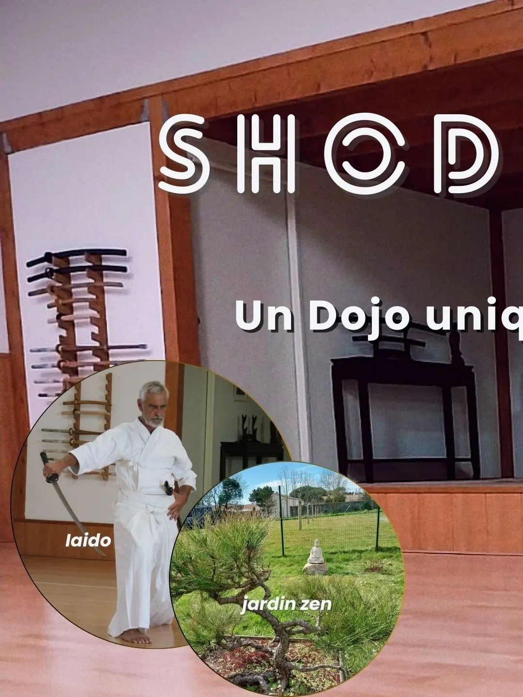
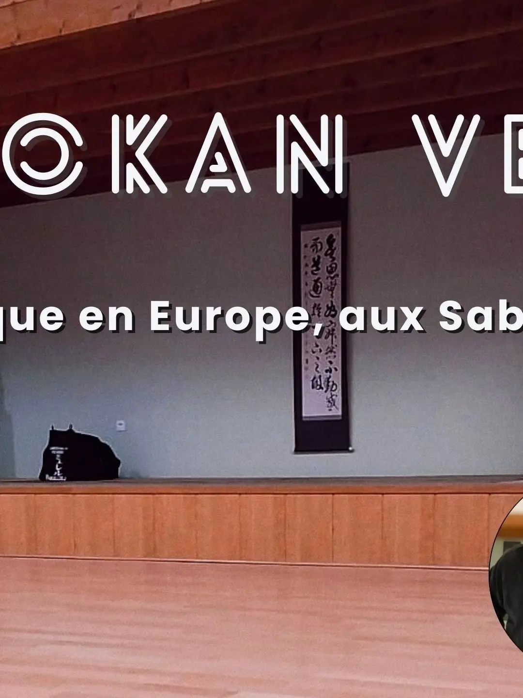
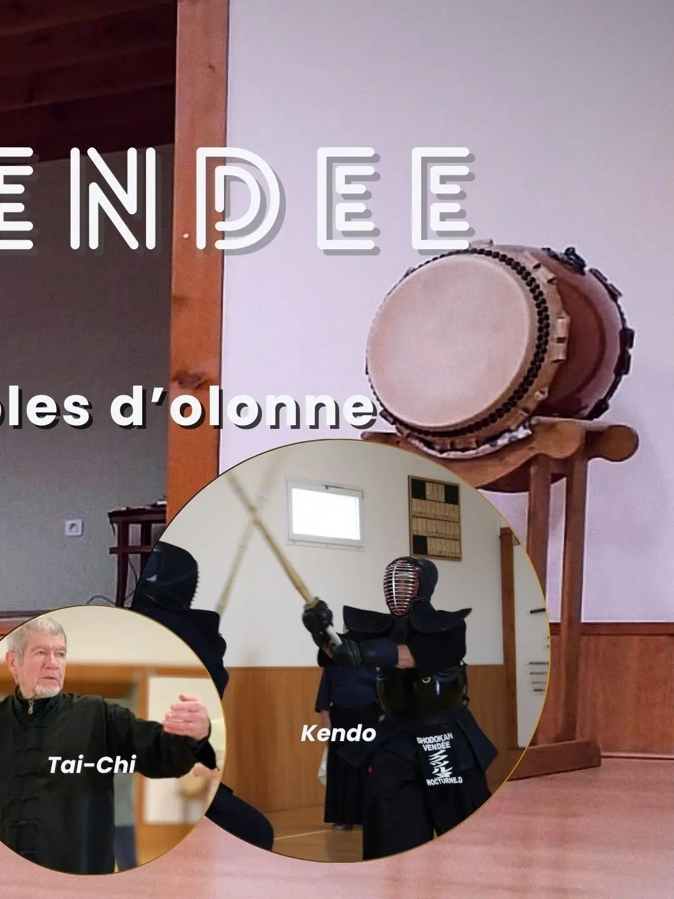
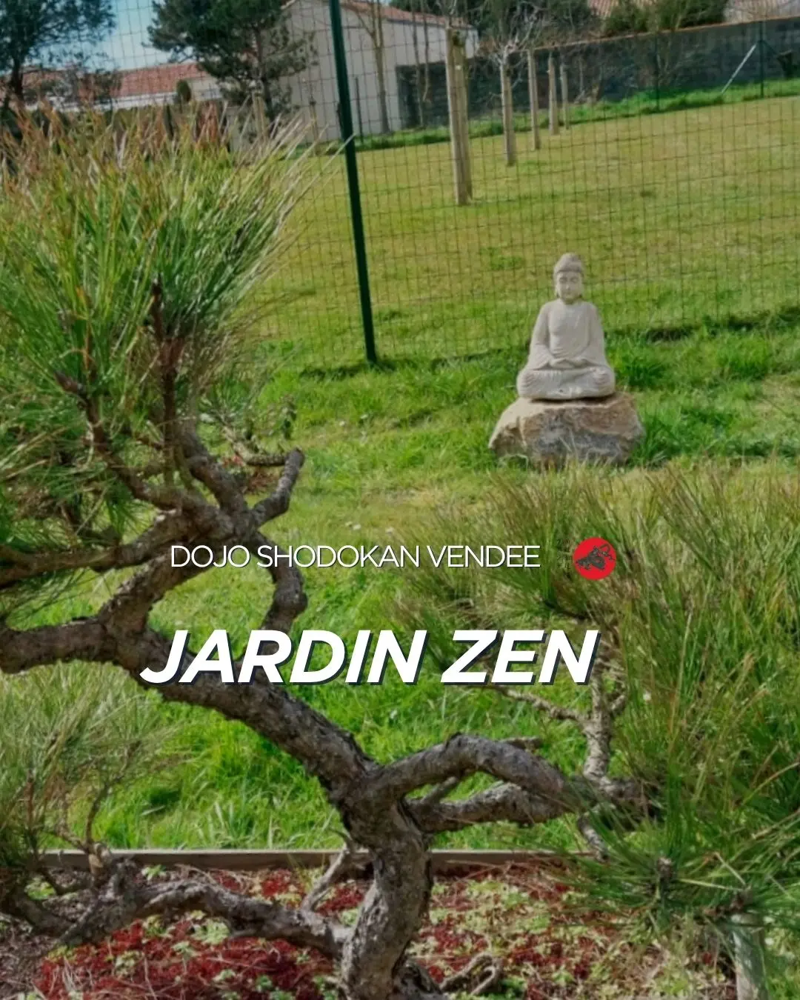
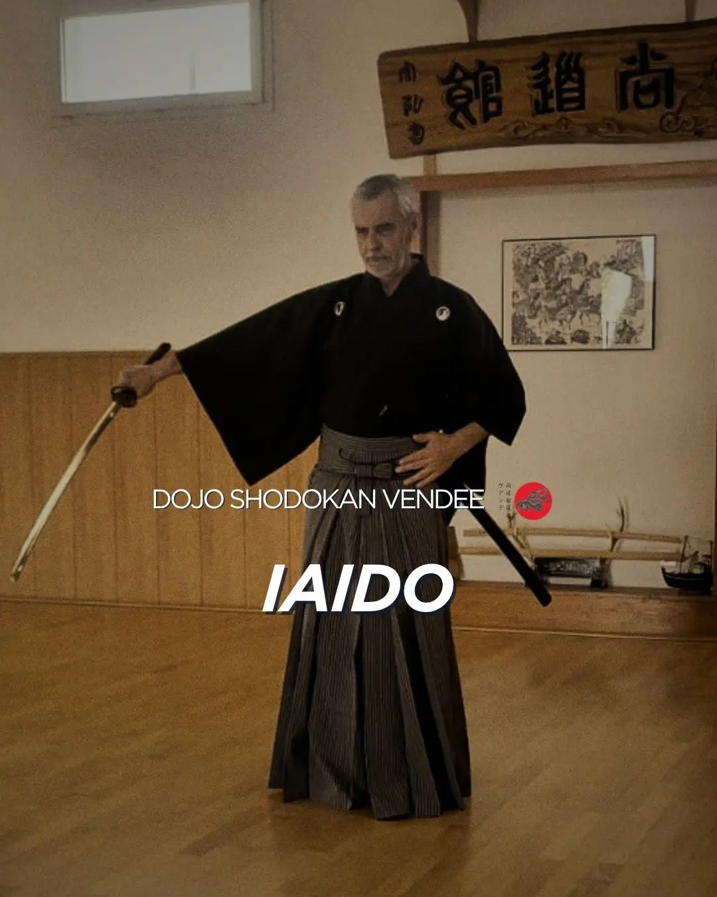
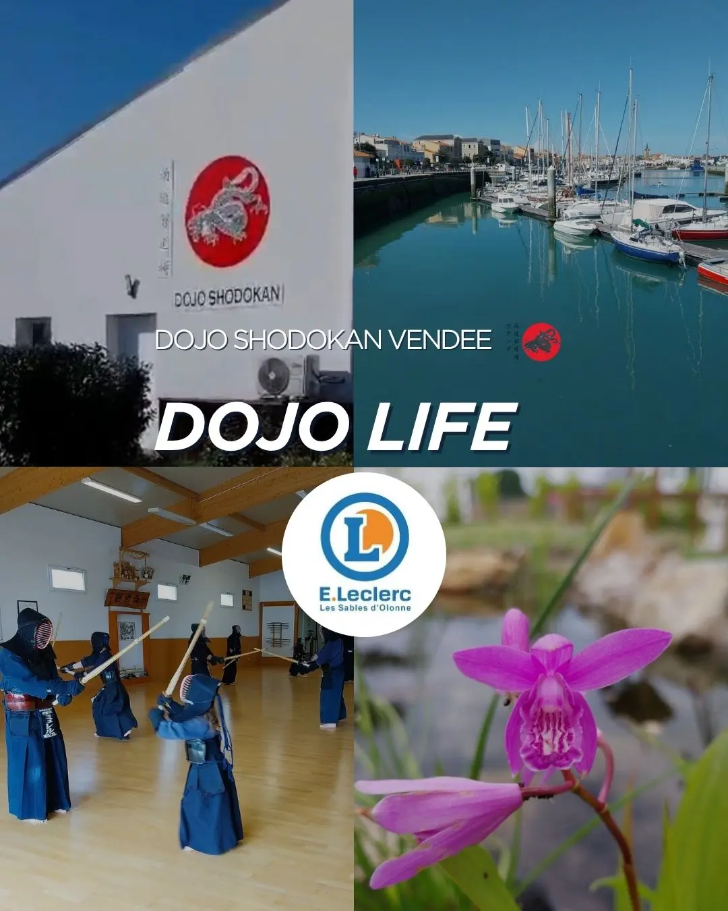
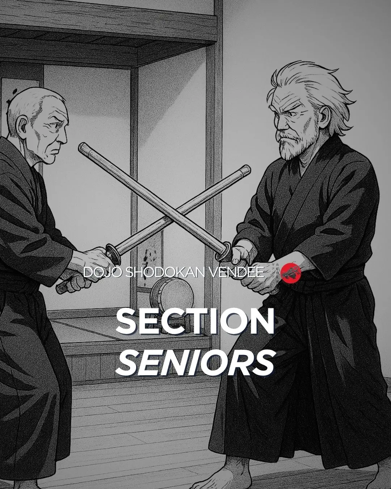
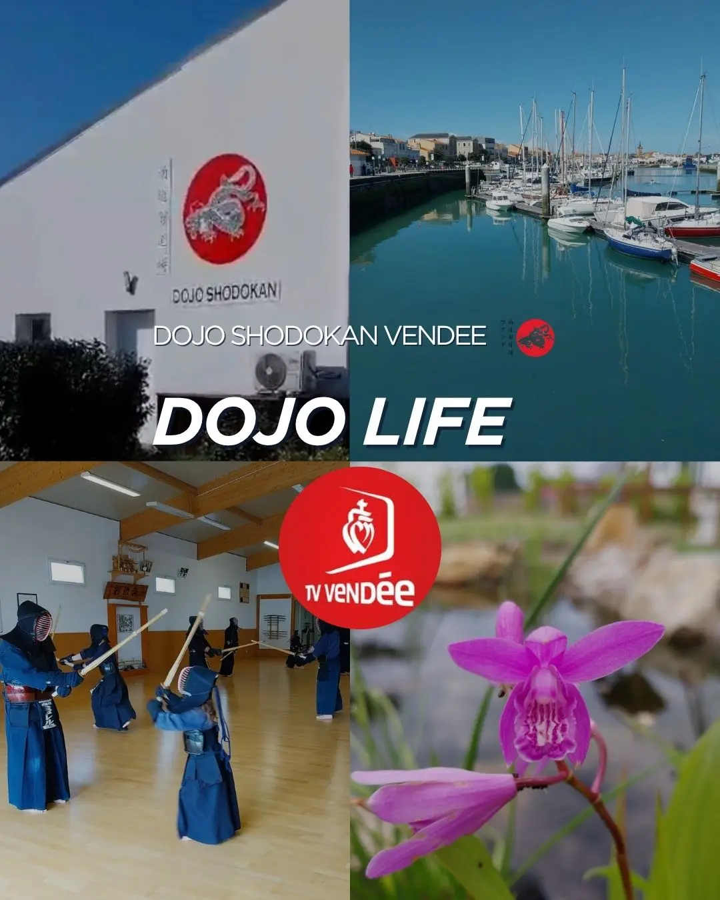
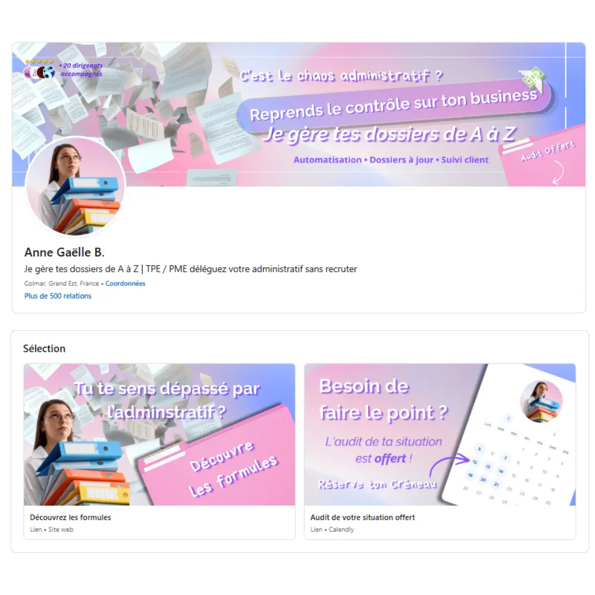

Vous avez développé votre expertise. J'aide votre présence en ligne à la rendre évidente.
Un visiteur ne devrait jamais avoir à deviner votre valeur. J'analyse et structure les parcours digitaux qui transforment vos visiteurs passifs en clients conquis.
Située à Obernai en Alsace, j'accompagne les indépendants, associations et petites structures du Bas-Rhin et de toute la France à transformer leur présence digitale en véritable levier de développement.

Ils m'ont confié leur présence digitale
5/5 +10 projets accompagnés
Une méthode unique axée sur la conversion
Mon métier ne consiste pas à embellir une présence en ligne mais à identifier ce qui freine la compréhension, la confiance et le passage à l'action. Voici les 4 piliers sur lesquels reposent mes analyses :
01. Compréhension
Le visiteur comprend-il en 3 secondes chrono : ce que tu fais, pour qui tu le fais, et pourquoi il devrait te choisir toi plutôt qu'un autre ?
02. Frictions invisibles
Chaque détail qui fait hésiter ou stoppe le passage à l'action : un trop-plein d'informations, un manque de hiérarchie visuelle ou un parcours décousu.
03. Crédibilité
L'évaluation de ton image globale. Est-ce qu'elle inspire immédiatement confiance, clarté totale et professionnalisme ?
04. Conversion
L'analyse des points de contact. Est-ce que le parcours pousse naturellement et sans forcer à : réserver un appel, te contacter, cliquer ou demander un devis ?
L'analyse du parcours digital
Un regard extérieur qui identifie les frictions, clarifie les priorités et transforme ta présence en ligne en plan d'action concret.
Une analyse stratégique qui révèle ce qui bloque ton acquisition
Détection des points de blocage
J’analyse ton écosystème comme un parcours utilisateur réel : ce que ton utilisateur comprends réellement, où tes visiteurs hésitent, ce qui casse la confiance et ce qui empêche d'aller jusqu'à la collaboration.
- Rapport complet sur les frictions du parcours client
- Cartographie exacte des zones de décrochage
Plan d'action correctif
Tu reçois un plan d'exécution clair pour corriger le tir : modifier, ajouter ou supprimer des éléments, optimiser tes points de contact et réécrire ton message pour transformer des visiteurs passifs en clients concrets.
- Modifications concrètes (intitulés boutons, sections, message)
- Application en totale autonomie ou accompagné par mes soins
Une stratégie déployée sur tes canaux d'acquisition
Tu souhaites déléguer l'exécution ? J'applique cette même méthode sur les canaux qui composent ton écosystème digital.
Chaque projet présenté ci-dessous repose sur la même logique : comprendre les attentes de l'utilisateur, supprimer les frictions et construire un parcours qui facilite la prise de décision.
Un profil LinkedIn qui rassure et convainc avant même le premier rendez-vous
[ Bannières stratégiques : la première promesse visible d'un profil ]
Chaque bannière a été conçue pour répondre à une problématique précise : clarifier une offre, rassurer, se différencier ou attirer le bon type de client.
Des sites web conçus pour être trouvés, compris et contactés
Une vitrine Instagram immersive qui attire les clients
Faire vivre l'expérience avant la première visite
Objectif Le dirigeant ne cherchait pas à accumuler des abonnés ou des likes. Son objectif était simple : donner envie aux personnes de franchir la porte du dojo.
Approche Création d'une direction artistique immersive, de contenus pédagogiques et de vidéos mettant en avant l'atmosphère unique du lieu, les événements organisés et la vie du dojo au quotidien.
Résultat Instagram est devenu un prolongement du site web : un outil de réassurance et de découverte permettant aux futurs pratiquants de se projeter avant leur première initiation.







Montrer ce qu'aucune page web ne peut transmettre

Des publications conçues pour toucher une audience locale et générer des demandes sans publicité.
Ils ont propulsé leur activité grâce à une présence en ligne maîtrisée
Découvre les retours d'expérience après optimisation.
Dojo Shodokan
"Nous sommes ravis de la collaboration avec AM 2.0. Nous lui avons confié la refonte et la gestion de notre site web et de notre Instagram. Nous avons gagné en visibilité sur notre région. Et nous avons gagné de nombreuses demandes et de nouveaux adhérents grâce à la stratégie de communication et d'acquisition mises en place. On recommande fortement cette entreprise qui sait écouter et proposer des solutions adaptées."
[ Refonte stratégique Site web & Instagram ]

Anne-Gaëlle B.
"Je suis ravie du travail réalisé par Aurore. Elle a complètement repensé mon profil LinkedIn pour qu'il reflète vraiment qui je suis et ce que je propose. Au-delà du visuel, elle a mis en place une vraie stratégie de contenu qui m'aide à être plus visible et plus crédible. Depuis, j'ai beaucoup plus de retours positifs lorsque je prends contact avec de nouveaux prospects. Une collaboration que je recommande sans hésiter."
[ Écosystème d'acquisition LinkedIn ]

Charles M.
"Aurore est de très bon conseil et ça apporte immédiatement des résultats concrets."
[ Analyse stratégique LinkedIn ]

Kelly C.
"Wow bluffant ! Une analyse qui dévoile clairement un véritable savoir-faire stratégique et visuel."
[ Optimisation Profil LinkedIn ]
MB Performance
"La création du site m'a apporté plus de visibilité et une meilleure image face à la clientèle qui est de plus en plus exigeante. AM 2.0 m'a guidé de A à Z pour la création du site. Elle a su faire exactement ce que je voulais voir même mieux. Elle est de bon conseil, très professionnelle et à l'écoute. Je suis sincèrement satisfait du travail et le résultat final dépasse mes attentes."
[ Stratégie Web & Fiche Google ]
Besoin d'un regard extérieur sur ta présence en ligne ?
Réponds à quelques questions sur ton activité. Je réalise un premier diagnostic de ton site, ton profil ou tes réseaux afin d'identifier les principaux axes d'amélioration.
Questionnaire rapide • Sans engagement • Retour personnalisé
"Bâtir une vitrine solide ne demande pas d'artifices, mais une logique de conversion millimétrée couplée à un design mémorable. Travaillons ensemble sur ce qui fait vraiment grandir votre activité. - Aurore -"
Derrière chaque visite se cache une opportunité. Rendons votre présence digitale plus claire, crédible et efficace
On parle souvent d’algorithmes, de métriques et de tunnels. Mais mon métier consiste avant tout à comprendre la psychologie humaine. J’aide les entrepreneurs et les associations à transformer leur présence digitale en un système d’acquisition fluide, transparent et redoutablement efficace.
J'interviens sur ce qui déclenche réellement le passage à l'action :
La clarté du message
Dire la bonne chose, au bon moment.
La structure du parcours
Guider le visiteur sans jamais le perdre.
Les points de friction
Éliminer les doutes et ralentissements.
L'image perçue
L'impact visuel haut de gamme immédiat.
Chaque espace digital est analysé comme une expérience vivante :
Tu souhaites faire évoluer ta présence en ligne ?
Deux façons d'avancer ensemble. Tu peux soit obtenir un premier regard extérieur sur ta présence digitale, soit me contacter directement pour échanger sur ton projet.
Tu es prêt à avancer ?
Réponds à quelques questions sur ton activité. Je réalise un premier diagnostic de ton site, ton profil ou tes réseaux afin d'identifier les principaux points de friction et les opportunités d'amélioration.
Besoin d'un premier échange avant de te lancer ?
Tu as des questions sur ton site, ton profil LinkedIn ou ton acquisition digitale ? Écris-moi directement. Je te dirai comment je peux t'aider et quelle approche serait la plus pertinente pour ton projet.
[ FAQ ]
Toutes les réponses pour lancer ton projet sans zone d'ombre
Un joli site ou un beau profil LinkedIn sans réflexion psychologique ne génèrent aucun client. Là où d'autres se contentent d'exécuter une demande graphique, j’analyse votre présence digitale comme une expérience utilisateur complète.
On travaille ensemble sur les mécanismes qui influencent réellement le passage à l'action : ce qu’un visiteur comprend en 3 secondes, ce qui retient son attention, là où il hésite et pourquoi il quitte votre page. Je ne crée pas de simples vitrines passives, je structure un système d'acquisition cohérent fait pour attirer, rassurer et convertir de vrais prospects.
Les intelligences artificielles et les générateurs de templates sont d'excellents outils d'exécution, mais ils ont un angle mort majeur : ils manquent de recul critique et ne connaissent pas la réalité de votre terrain. Ils assemblent des structures standards sans comprendre pourquoi un visiteur précis décroche sur votre page.
Ce que vous déléguez ici, ce n'est pas forcément la mise en œuvre, c'est l'analyse stratégique et le diagnostic. Mon rôle est de poser un regard humain et extérieur sur votre écosystème pour identifier précisément vos points de friction et vous livrer un plan d'action correctif clé en main.
Une fois ce plan d'action stratégique reçu, vous êtes totalement libre : vous pouvez utiliser vos outils ou l'IA pour appliquer mes recommandations en toute autonomie sur vos canaux, ou choisir de me confier la partie technique et graphique pour un résultat sur-mesure.
Absolument, car la conversion ne peut pas exister sans trafic qualifié. Une part essentielle de mon accompagnement consiste à optimiser vos canaux de visibilité organique pour attirer les bons profils.
Cela passe par l'optimisation SEO technique de votre site web, mais également par la structuration stratégique de votre fiche Google Business pour le référencement local. Le but est double : faire en sorte que vos clients idéaux vous trouvent facilement sur Google, et que la transition vers votre page web soit intuitive et déclenche la prise de contact.
Pour vos réseaux sociaux (LinkedIn, Instagram) : Oui. Je vous livre des bannières et des templates de posts directement configurés sur Canva. Votre image reste évolutive et vous gardez la main pour ajuster vos contenus de manière agile.
Pour sites internet ou page web : Non, et c'est un choix technique fort. Je n'utilise aucun constructeur de site (No-Code lourd/générique) ; je code l'intégralité de vos pages sur-mesure. C'est le seul moyen de vous garantir des performances de chargement millimétrées, une fluidité absolue sur mobile et une sécurité totale face aux failles de sécurité. Vous restez propriétaire à 100% du code source, et pour vos mises à jour ou évolutions de contenu, je propose des offres d'Accompagnement digital saisonnier ou d'Optimisation continue de présence digitale. Cela vous évite de casser la structure du site et maintient son efficacité commerciale intacte dans le temps.
Les CMS et constructeurs de sites traditionnels demandent une maintenance technique et des mises à jour continuelles pour fonctionner correctement. Sans ce suivi constant et rigoureux, votre site se retrouve rapidement exposé à des bugs d'affichage ou à des failles de sécurité majeures.
De plus, l'utilisation de templates et de plugins tiers rend la maîtrise des performances beaucoup plus complexe, notamment sur smartphone où chaque seconde de chargement en trop peut vous faire perdre un client potentiel.
En codant votre site sur-mesure, je vous garantis une architecture technique saine, ultra-sécurisée et nativement optimisée pour Google. Sans complexité d'arrière-plan, votre site charge instantanément, ne dépend d'aucun abonnement d'extension caché et conserve une efficacité commerciale totale dans le temps, sans que vous n'ayez à surveiller les mises à jour chaque semaine.
C'est tout à fait normal. Entre LinkedIn, Google Business, Instagram ou un site internet, il est facile de s’éparpiller sans obtenir de résultats.
C'est pourquoi je n'installe rien au hasard. Avant de lancer le moindre chantier graphique ou technique, j'analyse votre parcours digital existant en amont lors de notre phase de cadrage. L'objectif est d'étudier votre modèle et de comprendre précisément où se situe les points de friction. Je détermine ainsi le levier prioritaire sur lequel travailler (clarté du message, canal d'acquisition ou structure de conversion) pour taper juste, au bon endroit, et déclencher de réelles opportunités d'affaires.
Mes services sont spécifiquement dimensionnés pour deux types d'acteurs qui ont besoin d'humaniser leur message tout en structurant leur croissance : les solopreneurs (consultants, freelances, indépendants) et les associations.
Que vous cherchiez à transformer votre profil LinkedIn pour conquérir une clientèle, à créer une landing page à fort taux de conversion, ou à fédérer une communauté autour d'un projet associatif, j'adapte la complexité technique et la tonalité du message à la réalité de votre marché.
En nettoyant les points de friction et en unifiant vos leviers (visuels, messages, parcours), les résultats se mesurent rapidement sur votre activité :
- Une clarté totale et immédiate sur votre positionnement de marque.
- Une augmentation sensible des prises de contact qualifiées (les visiteurs savent pourquoi ils vous appellent).
- Une forte hausse de la perception de votre expertise et de votre autorité sur votre marché.
- Des visiteurs beaucoup plus engagés, rassurés et en confiance tout au long de leur navigation.